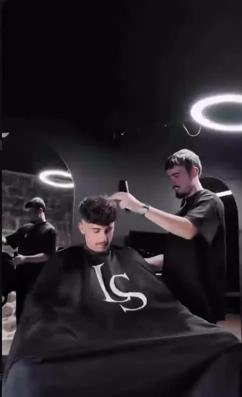
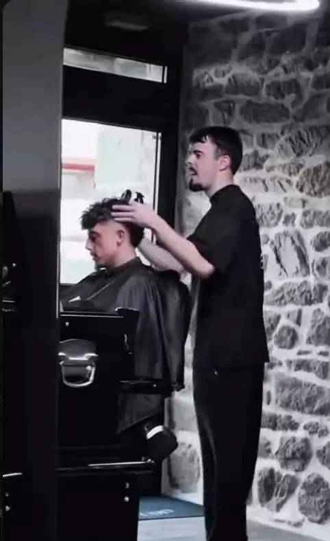
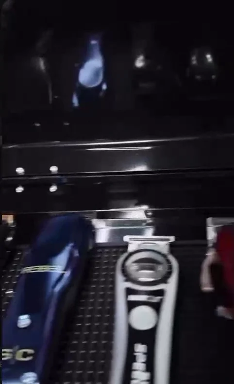
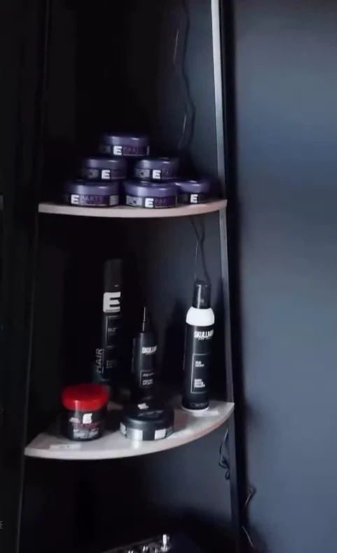

Le noir d'abord
Le fond est noir, comme les murs. Le blanc ivoire porte le texte ; rien n'est gris moyen.
Design system · v1.0 · novembre 2026
01 — Principes
Chaque règle vient de ce qu'on voit en poussant la porte du 4 rue de la Poste : des murs noirs, le granit d'origine, deux grands miroirs en arche, des anneaux de lumière au plafond, et le LS brodé sur chaque cape.
Le fond est noir, comme les murs. Le blanc ivoire porte le texte ; rien n'est gris moyen.
Les miroirs du salon donnent notre seule forme courbe. Elle cadre les photos et la vidéo phares, jamais les boutons.
Pas d'ombres portées : sur du noir, on éclaire. L'anneau néon et la lueur dorée remplacent l'élévation.
Le cuivre doré de la story horaires signale l'action, les prix et les heures. Moins de 5 % d'un écran.
02 — Couleurs
Les composants n'utilisent que les jetons sémantiques (--color-*). Les primitives (--ls-*) servent à définir ces jetons.
--color-bg#0A0A0B · ls-black-950--color-surface#111113 · ls-black-900--color-surface-2#19191C · ls-black-800--color-surface-hover#242428 · ls-black-700--color-text#F4F1EA · tout le texte courant--color-text-muted#A29D93 · descriptions, méta--color-text-faint#6F6B64 · déco, désactivé, ≥ 24 px--color-line / -strongIvoire 12 % / 28 %--color-accent-hover#E2C595 · ls-gold-300, anneau de focus--color-accent#C9A26B · ls-gold-500--color-accent-press#9C7A48 · ls-gold-700--color-line-accentOr 55 % · ornements, arches--ls-granite-300#B9AD99--ls-granite-600#7D7262--ls-oak-400#B08A62 · parquet, étagères--color-success / -danger#8CC29A · #E2796A03 — Typographie
Bodoni Moda reprend le contraste fin/épais du monogramme LS. Manrope reprend la sobriété géométrique de l'enseigne « LE STUDIO — BARBER SHOP ». Deux familles, pas une de plus.
Bodoni Moda
Titres, noms de prestations, prix en grand, citation « À très vite ». Graisses 400 et 500, italique 400. --font-display
Manrope
Texte courant, boutons, surtitres, navigation. Graisses 400, 500, 600. --font-sans
.ls-display.ls-h1.ls-h2.ls-h3.ls-caps.ls-h2.ls-italic.ls-leadCoupes homme, dégradés et barbe, du mardi au samedi, dans un salon en granit au centre de Ploumagoar.
bodyOn prend le temps de parler de ce que vous voulez avant de sortir la tondeuse. Shampoing, coupe, coiffage et un conseil produit si vous le souhaitez.
.ls-small.ls-labelNos prestations
Règles : titres en 400, jamais en gras. Capitales espacées en Bodoni seulement à 18 px et plus (les déliés disparaissent en dessous) ; plus petit, on passe au surtitre Manrope 600. Chiffres tabulaires pour les heures et les prix. Lignes de 62 caractères maximum.
04 — Logo
Le lockup en arc vient de la vidéo et du t-shirt ; la version horizontale sert la navigation ; le monogramme seul sert l'icône et les petits formats.
Arc · couverture, pied de page, réseaux, cape.
Horizontal · navigation. Zone de protection en pointillés = hauteur du « L ».
Monogramme · favicon, avatar, filigrane. 24 px minimum.
Le logo reste ivoire sur noir ou noir sur ivoire. Jamais en or, jamais sur l'or, jamais déformé, incliné ou ombré.
Fichiers vectoriels : assets/logo/ (arc, horizontal, monogramme, favicon ; versions ivoire et noire).
05 — Formes & motifs
Trois motifs tirés du lieu. Un seul par écran en vedette, pour qu'ils restent forts.

.ls-arch · --radius-arch. Variante --outline : un filet or décalé de 10 px, comme le cadre du miroir. Pour la photo ou la vidéo principale d'une section.
.ls-neon · --glow-neon. Vu en perspective (--tilt) comme au plafond. S'allume une fois au chargement (--flicker), puis reste fixe.
.ls-divider : filet, ciseaux, filet, repris de la story. .ls-granite : grain très discret pour un fond sans photo.
06 — Espace & mouvement
--space-1 à --space-11 (4 → 192). Section : --section-y (96 → 192). Gouttière : --gutter (20 → 80). Conteneur : 1280 px.
--ease-out · cubic-bezier(.22, 1, .36, 1) · tout ce qui arrive
--ease-in-out · cubic-bezier(.65, 0, .35, 1) · ce qui se déplace
150 ms couleur et soulignement · 250 ms boutons et cartes · 600 ms zoom photo · 1100 ms entrée du hero (une fois). Survol : carte +2 px, photo ×1,03, flèche +3 px. Avec « réduire les animations », tout est immobile.
07 — Composants
Un seul bouton primaire (or) par écran : l'action « Réserver ». Libellé = verbe + objet, en capitales espacées Manrope.
Horaires
4 rue de la Poste22970 Ploumagoar
L'état « Ouvert / Fermé » est calculé à l'heure de Paris. Le jour en cours est signalé à côté du libellé.
Shampoing, coupe aux ciseaux ou à la tondeuse, coiffage.
Traçage des contours, finition à la lame, huile.
Couleur, décoloration ou motif, sur devis.
Prix des prestations à fournir (affichés sur Planity) : le composant est prêt.

Dégradé, ciseaux ou les deux. On en parle avant de commencer.

Contours nets, finition à la lame et soin.

Couleur, décoloration, motifs : sur demande.
Écrivez une adresse e-mail avec un @.
08 — Icônes
Grille 24 px, trait 1,4 px, bouts arrondis, en or sur noir. Les icônes de la story (calendrier, horloge, ciseaux) servent de modèle.
09 — Direction photo
Uniquement des photos du salon et de l'équipe : noir dominant, granit en contrepoint, l'anneau lumineux dans le cadre quand c'est possible. Pas de banque d'images.



Format vertical 3:4 ou arche. Noir profond, blancs qui brillent (néon, logo). Gestes en cours : la tondeuse, le peigne, la main sur la nuque.
Filtres colorés (le rouge de la fin de vidéo), texte incrusté sur l'image, coins arrondis hors arche, flou de fond artificiel.
Les images actuelles viennent de stories (483 px de large). Pour le site final : une séance photo et une vidéo en 1080p minimum.
10 — Mise en situation
Barber shop · Ploumagoar
Du mardi au samedi, dans un salon en granit et en noir, 4 rue de la Poste.